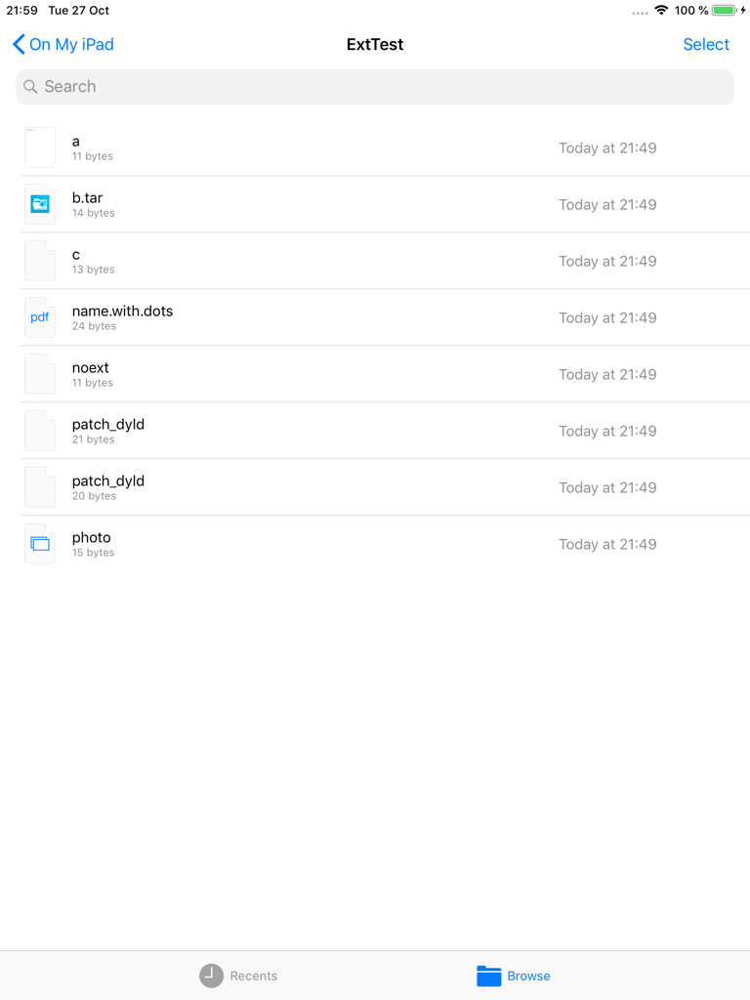
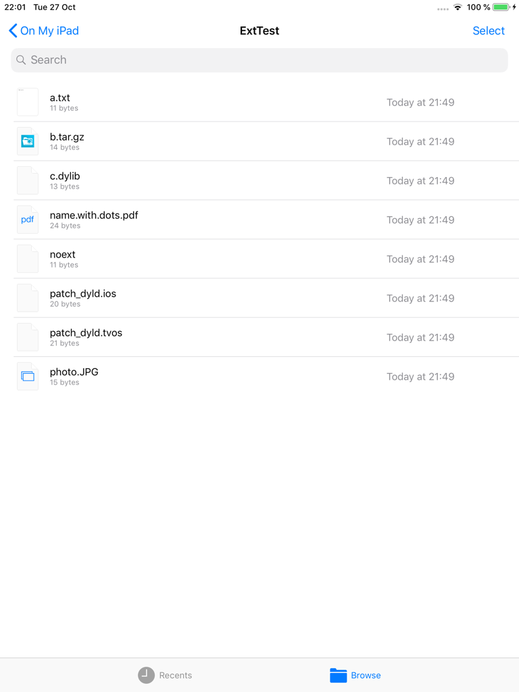
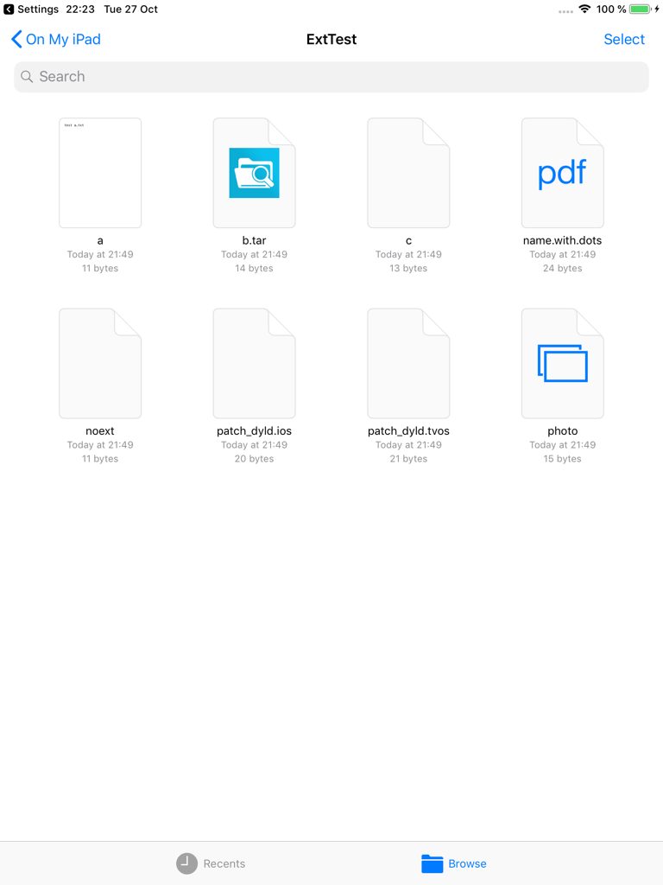
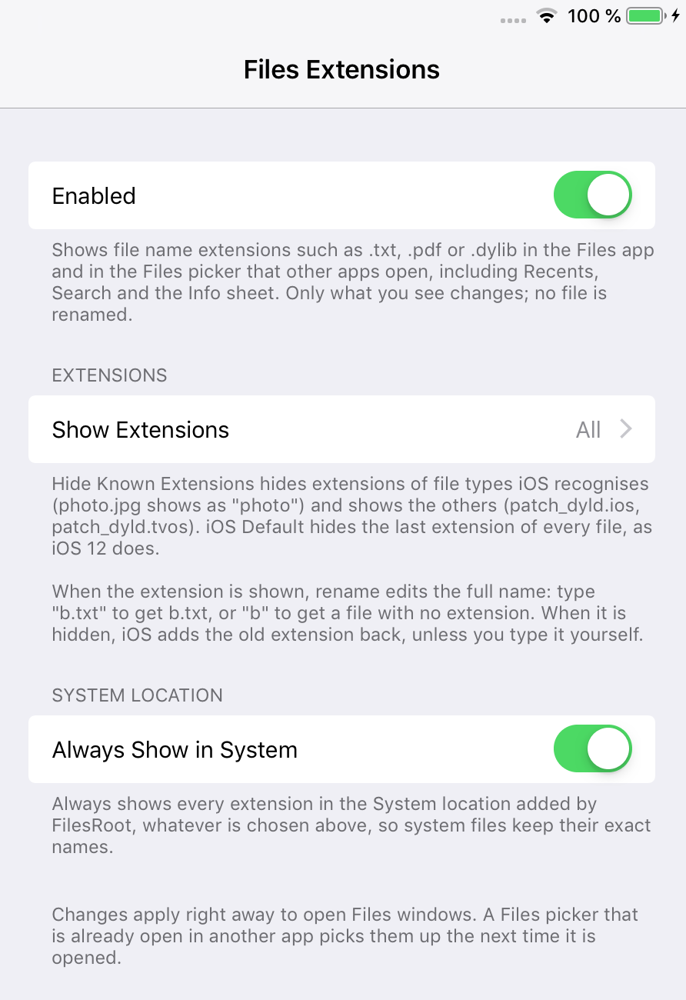

FilesExtensions (iOS 12)
Show or hide file name extensions in the Files app.
iOS 12's Files app drops the last extension of every file, whatever it is: a.txt shows as "a", and patch_dyld.ios and patch_dyld.tvos both show as "patch_dyld". FilesExtensions shows the full names. You can also hide only the extensions iOS knows, like the Finder on a Mac, or keep the iOS behaviour.
Only what you see changes. No file is renamed.
Screenshots




Features
- Show All Extensions (default), Hide Known Extensions, or Hide All Extensions (iOS Default)
- Every location, list and icon view, Recents, Search, the Info sheet, the Files picker other apps open, and the Dock recents popover
- Rename edits the full name when extensions are shown, and never doubles an extension you type
- Optionally always shows every extension in FilesRoot's System location
- Changes apply right away, no respring needed
Settings
Settings > Files Extensions:
- Enabled: turns the tweak on or off.
- Show Extensions: Show All Extensions (default), Hide Known Extensions or Hide All Extensions (iOS Default).
- Always Show in System (on): always shows every extension in FilesRoot's System location.
Changes apply right away to open Files windows.
Compatibility
- Tested on iPad mini 2, iOS 12.5.8 (checkra1n + odysseyra1n / libhooker)
- Expected to work on iOS 12.x, on iPhone as well as iPad (tested on iPad)
- Works alongside FilesRoot and FilesArchiver
Changelog
Version 1.0.0
- First public release.
Information
| Version | 1.0.0 |
| Developer | itsAllexB |
| Size | 15 KB |
| License | GPL-3.0 |
| Source code | GitHub |
| Problems | Report an issue |
Unofficial. Not affiliated with or endorsed by Apple.